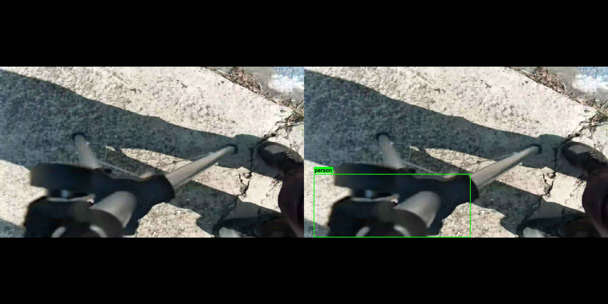
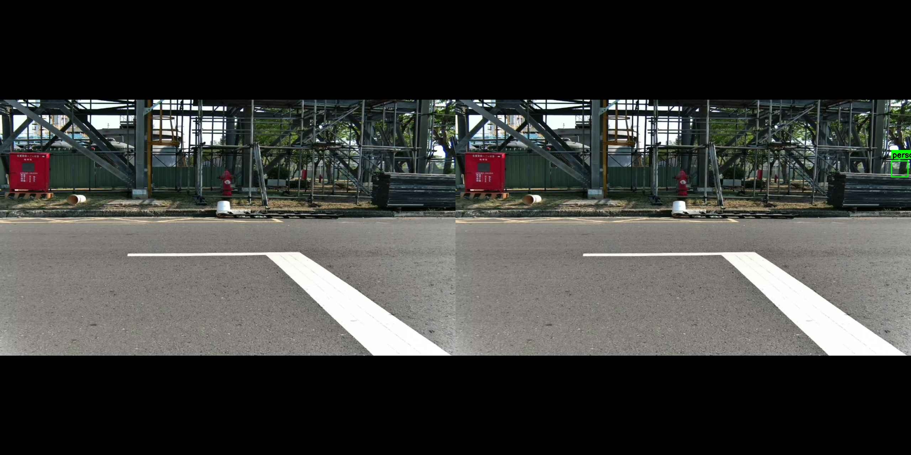
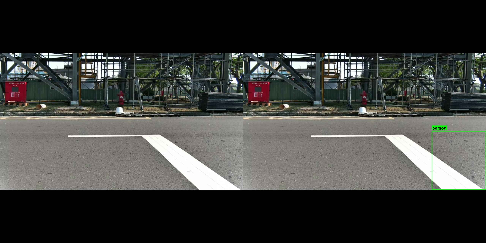
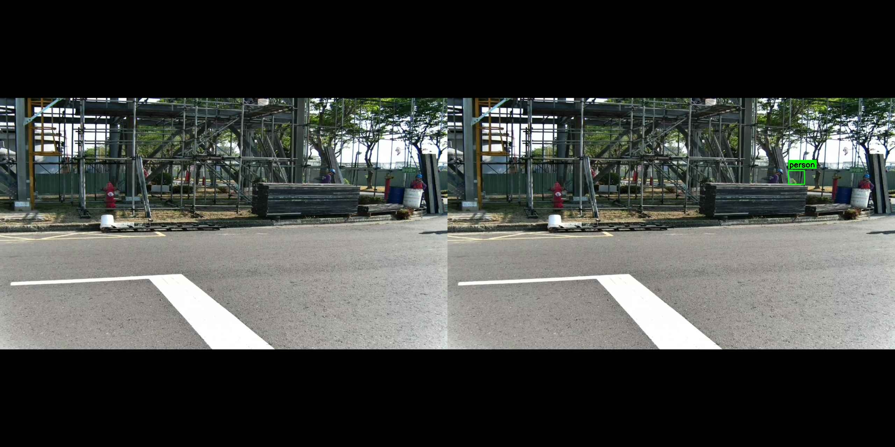
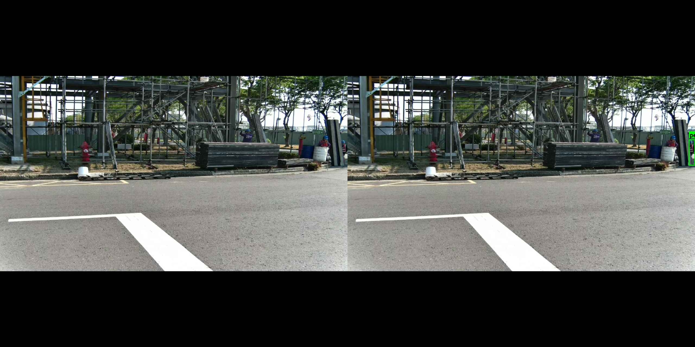
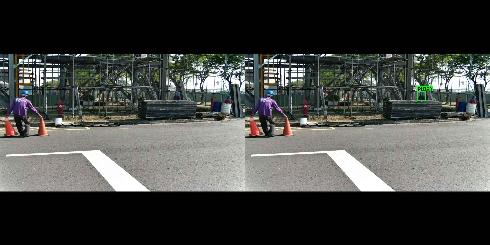
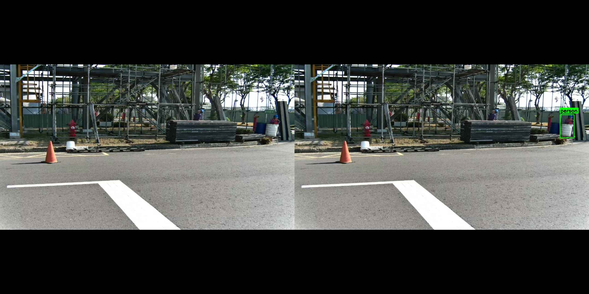
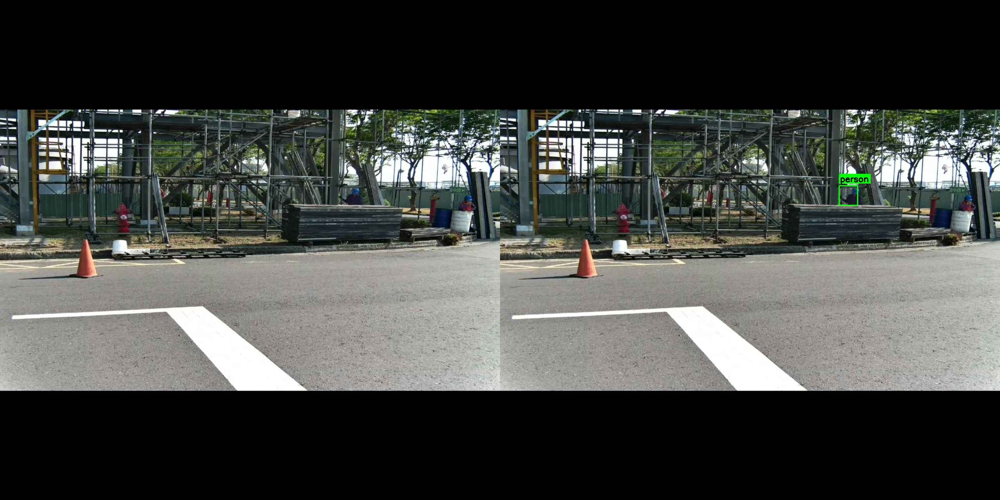

🤖 AI 審核結果報告
審核日期: 2026-04-10 | 審核案例: 前 10 個
0
🚨 真實違規
5
✓ 誤判
5
⚠ 需複審

ID: 1030290
15:36:38
📋 掛鉤未確實掛於施工架上
⚠ 需複審
俯視角度，無法清楚看到掛鉤連接狀態

ID: 1030288
15:36:30
📋 人員無穿戴安全帶
✓ 誤判
人員在地面，不在高處作業區域

ID: 1030287
15:36:27
📋 掛鉤未確實掛於施工架上
✓ 誤判
偵測框在地面邊緣，無高處作業場景

ID: 1030284
15:36:04
📋 掛鉤未確實掛於施工架上
⚠ 需複審
攝影機距離太遠，無法確認

ID: 1030278
15:35:40
📋 掛鉤未確實掛於施工架上
⚠ 需複審
攝影機距離太遠

ID: 1030274
15:35:29
📋 人員無穿戴安全帶
✓ 誤判
偵測框在鷹架外側，非高處作業人員

ID: 1030269
15:35:07
📋 人員無穿戴安全帶
✓ 誤判
地面工作人員（穿紫色工作服）

ID: 1030270
15:35:07
📋 掛鉤未確實掛於施工架上
⚠ 需複審
距離太遠，建議人工確認

ID: 1030255
15:34:24
📋 人員無穿戴安全帶
✓ 誤判
偵測框位置不正確

ID: 1030251
15:34:13
📋 掛鉤未確實掛於施工架上
⚠ 需複審
距離太遠無法確認